@CBSNews
📝 原文: Read more here:
🇨🇳 译文: 在这里阅读更多内容：

🕒 2026-08-07T21:40:31+00:00
| 来源 | 旧窗口内数量 | 本次新增 | 本次淘汰 | 当前窗口内共有 |
|---|---|---|---|---|
| 推文 + Dawn 新闻 | 0 | 40 | 0 | 40 |
| ARY News | 0 | 0 | 0 | 0 |
注：淘汰数 = 旧窗口内数量 + 本次新增 - 当前窗口内共有

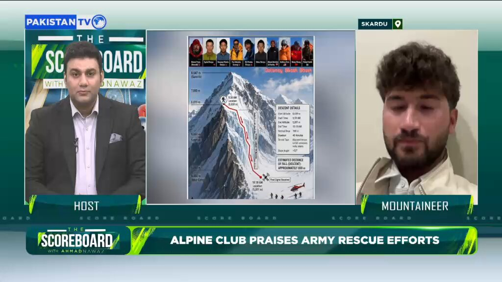

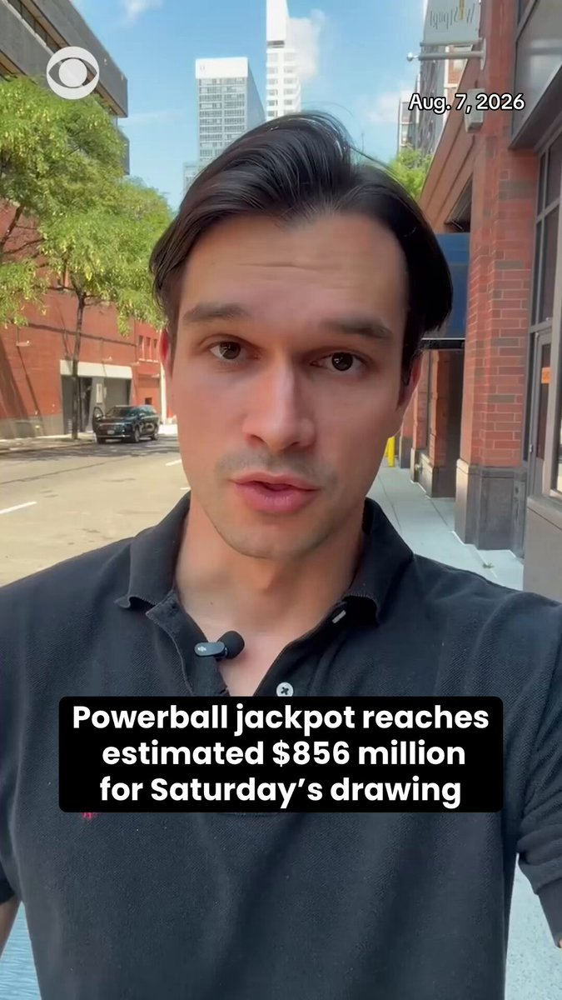
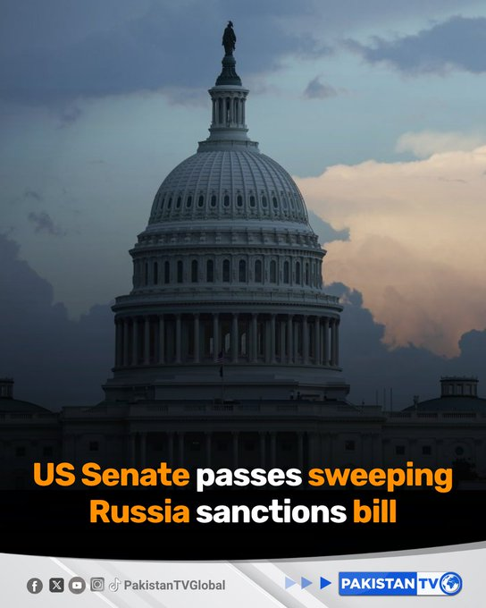
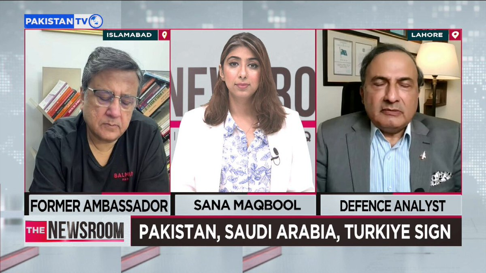
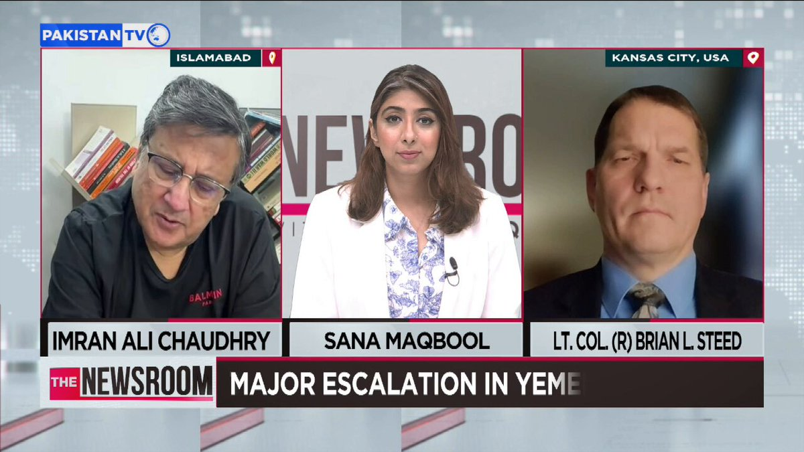
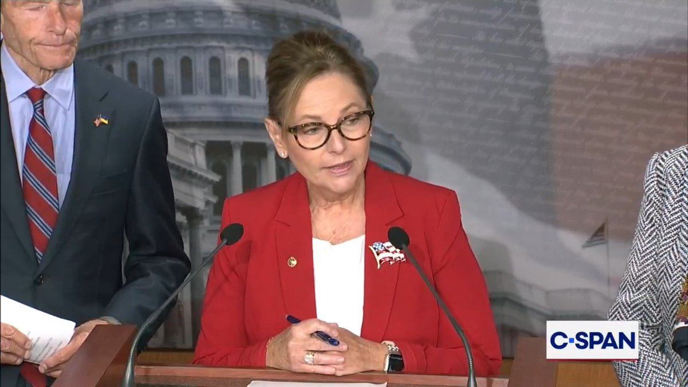


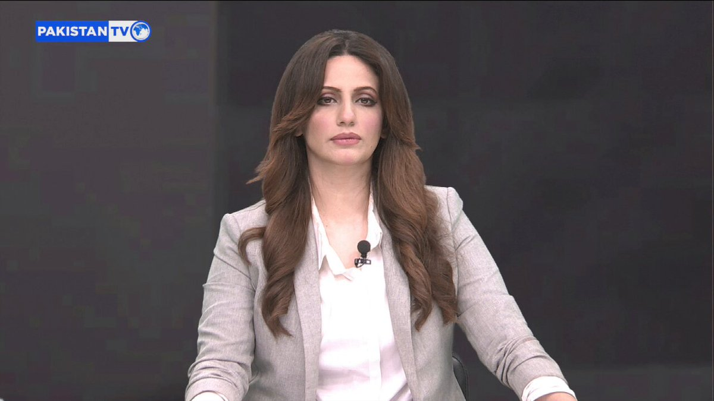
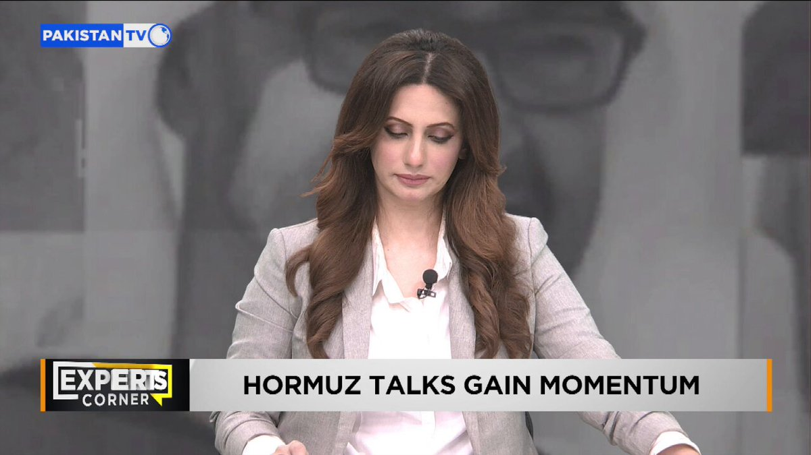

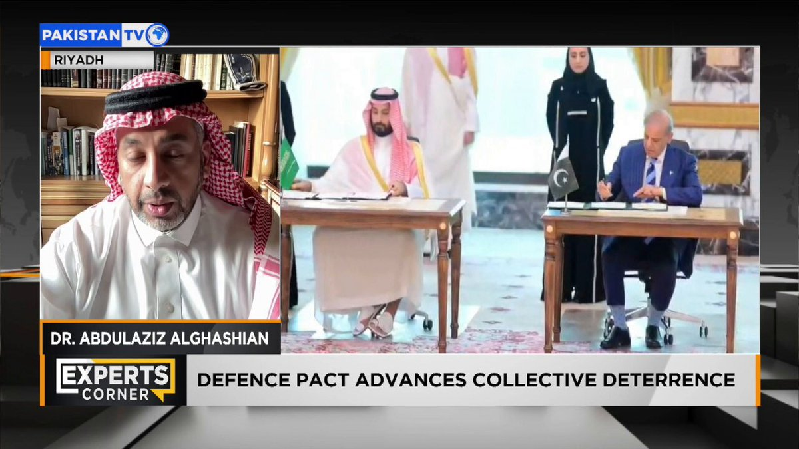


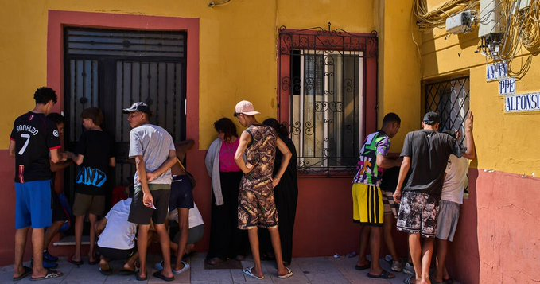
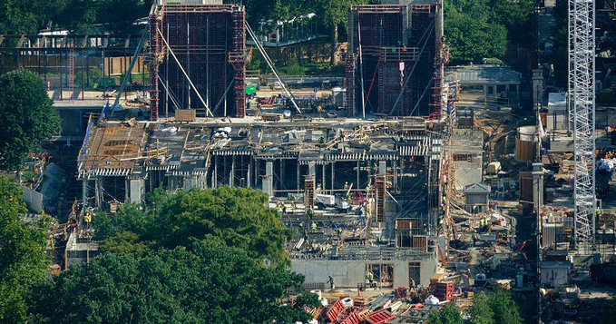


暂无文章。